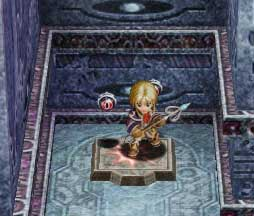
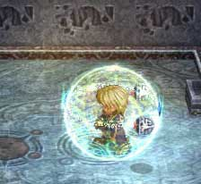
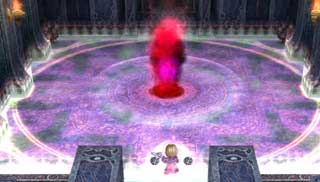
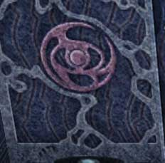

| 概要 | 情報 | 攻略チャート |
| Ys ORININ 攻略へ |
| 赤い魔物を倒し、宝箱から「セルセタの秘薬」を入手 (次のマップへ) 赤い魔物を倒し、台座に置いてある「蒼空の翼」を入手  床スイッチを押し、足場を上げる  風の魔法で床を移動する |
 トラップでワープ 邪神像を活性化 (次のマップへ) 床スイッチを押し、足場を上げる 足場をつたい「ロダの実」を入手 赤い魔物を倒し、ジャンプ床を出す ジャンプ床を利用し、宝箱から「エメラルド」を入手 宝箱のそばにある床スイッチを押し、扉の格子を上げる 格子戸の方へ進み、回廊へ出る |
| 宝箱から「蒼月の刻印」を入手 ルーが出てくる ルーに「ロダの実」をあげる (武器を強化してくれる) 女神像のある部屋上部の台座に「蒼月の刻印」をはめる 穴が出てくるので、落ちる ガレオン戦 |
| ガレオンが落ちていった穴へ、自分も落ちる 落ちてすぐの所にある宝箱から「青銅の鍵」、「マスク・オブ・アイズ」を入手 (次のマップへ) 「青銅の鍵」を使い、扉を開ける  部屋の中赤いコウモリを倒す イベント (ブースと取得) 魔人化した状態で、トラップへ入り石像を壊す ユニカとのイベント (次のマップへ) |
| 足場をうまく移動し、宝箱から「リベットブーツ」を入手 (次のマップへ) 床スイッチを踏み、扉を開ける (床スイッチで開いた扉へ行く) 宝箱から「獣魔のメダル」を入手 (赤い騎士が突然出てくる) (先ほどのマップに戻る) 右側の扉へ行く 赤いコウモリを倒し、邪神像を浄化 扉に「獣魔のメダル」をはめる ベラガンダー戦 エポナとのイベント (奥へ移動) |
| 概要 | 情報 | 攻略チャート |
| Ys ORININ 攻略へ |